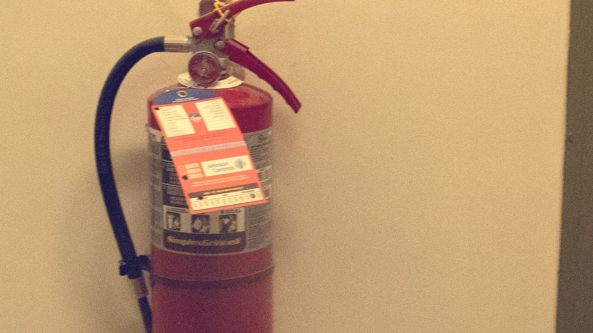

During the process of editing on Photoshop, I formatted this image size to (1920 x 1080 px), while setting as Bicubic Automatic. I chose this images in seeing it through different color spaces and PPI. In a visual perspective, this wide ratio is an effective source in devolping presentations, porfolios, and animation projects. Learning working with the dimensions made me more excited and aware of the size protion and end result that impacts the viewer.
Go to Image 2 Back to Homework 2